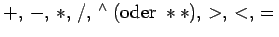

Inhalt Index DeskTop Bronstein

 Computeralgebrasysteme Einführung Aufbau und Umgang mit Computeralgebrasystemen
Computeralgebrasysteme Einführung Aufbau und Umgang mit Computeralgebrasystemen


Alle Systeme verfügen über einen Grundvorrat von Operatoren. Dazu gehören die für die Mathematik üblichen Operatoren , für die die bekannte Rangordnung bei der Abarbeitung gilt. Stehen die Operatoren zwischen den Operanden, so bezeichnet man diese Schreibweise als Infix-Form.
Die Palette der Operatoren, die in Präfix-Form vorliegen -- in diesem Falle steht der Operator vor den Operanden -- ist in allen Systemen beträchtlich. Hierzu gehören in der Regel Operatoren, die auf spezielle Objektklassen wie z.B. Zahlen, Polynome, Mengen, Listen, Matrizen, Gleichungssysteme wirken und auch Funktionaloperatoren wie Differentiation, Integration usw. Darüber hinaus sind in der Regel Operatoren für die Gestaltung der Ausgaberesultate, die Manipulation von Zeichenketten und weiteren dem System bekannten Objekten vorhanden. Manche Systeme gestatten die Darstellung einiger Operatoren in Suffix-Schreibweise, d.h., der Operator steht hinter den Operanden. Häufig benutzen Operatoren optionale Argumente, die spezielle Anwendungssituationen steuern.